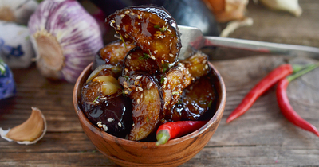

Баклажаны жареные в крахмале хрустящие в кисло-сладком соусе

Ингредиенты
- Баклажаны – 500 гр.
- Лук репчатый – 1 шт.
- Болгарский перец (небольшой) – 1 шт.
- Перец чили - 1 шт.
- Чесное - 2 зубч.
- Крахмал - 4 стол. л.
- Соевый соус - 50 мл.
- Мёд - 1 стол. л.
- Растительное масло - 3 стол. л.
- Кунжут - 1 чайн.л.
- Зелень кензы - по вкусу
Рецепт приготовления
- Подготовьте все ингредиенты. Баклажаны берите свежие, грунтовые, желательно нового урожая - такие плоды как правило небольшого размера и имеют матовую кожицу. Крахмал можно брать как кукурузный, так и картофельный. Масло выбирайте любое растительное, но оно обязательно должно быть рафинированным. Соевый соус берите натурального брожения, а мед желательно выбирать жидких сортов.
- Баклажаны помойте, отрежьте плодоножку и нарежьте любым способом на кусочки среднего размера. У меня были небольшие баклажаны и я нарезала их полукружками. При желании баклажаны можно замочить в соленой воде (столовая ложка соли на литр воды) на 20-30 минут, чтобы избавиться от горечи. После этого баклажаны нужно промыть и откинуть на дуршлаг, чтобы с них стекла вода.
- Баклажаны пересыпьте тремя ложками крахмала. Благодаря этому они получатся хрустящие и не впитают лишнего масла. Четвертая ложка крахмала пойдёт в маринад.
- В сковороде разогрейте растительное масло и выложите в неё баклажаны.
- Обжаривайте баклажаны до образования хрустящей корочки со всех сторон, периодически помешивая. Затем уберите баклажаны из сковороды.
- Луковицу и один зубчик чеснока почистите и нарежьте кубиком. Чтобы лук не щипал глаза при нарезке, обмойте его и нож холодной водой.
- Отправьте нарезанные лук и чеснок в ту же сковороду, где готовились баклажаны, и обжаривайте до золотистого состояния около 5 минут.
- Сладкий перец помойте, удалите у него семена и нарежьте полосками. Перец чили лучше оставить целиком, чтобы семена остались внутри. Тогда блюдо получится не такое острое.
- Добавьте оба перца в сковороду и обжаривайте все вместе еще минут 5.
- Верните в сковороду баклажаны и все перемешайте.
- Тем временем приготовьте маринад. Для этого к соевому соусу добавьте мед.
- Всыпьте оставшийся крахмал.
- Добавьте измельченный чеснок. Я пропустила его через пресс, но можно натереть чеснок и на мелкой терке или измельчить с помощью ножа.
- Перемешайте маринад до однородного состояния, чтобы не было комочков от крахмала.
- Влейте готовый маринад в сковороду.
- Кинзу помойте, измельчите и добавьте в сковороду. Все перемешайте.
- Готовое блюдо посыпьте кунжутом.
- Подавайте баклажаны сразу, горячими. Приятного аппетита!
Вернуться к списку блюд